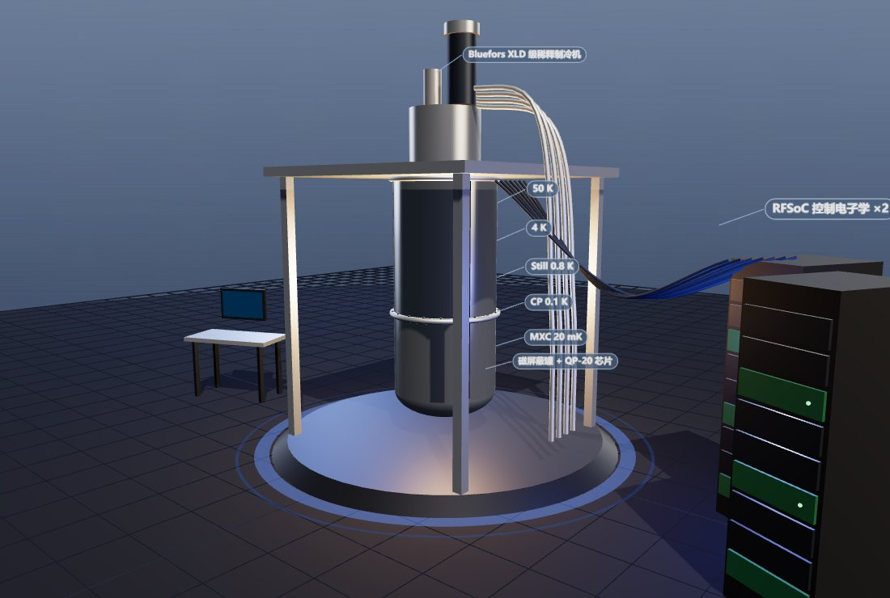
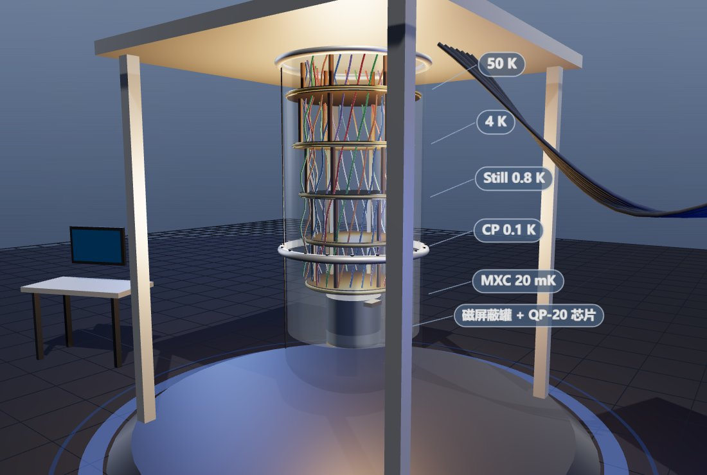
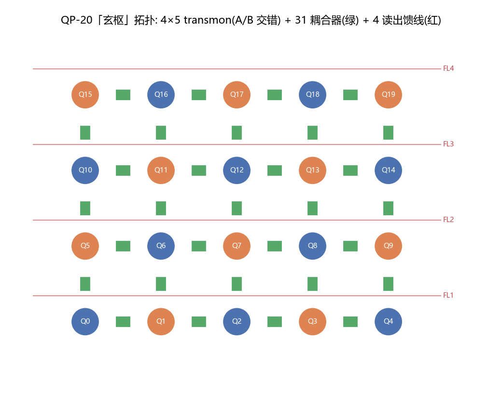
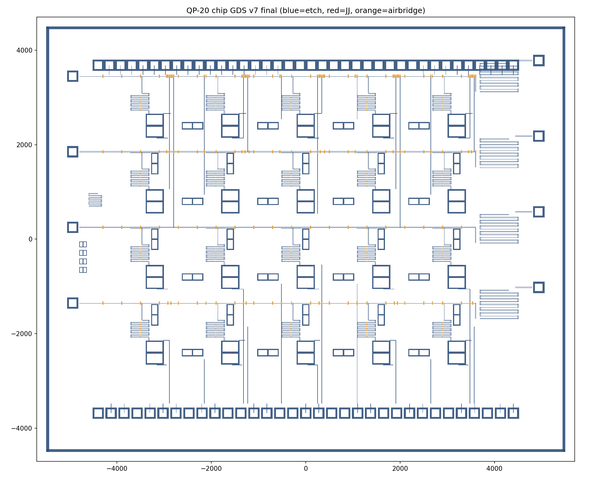
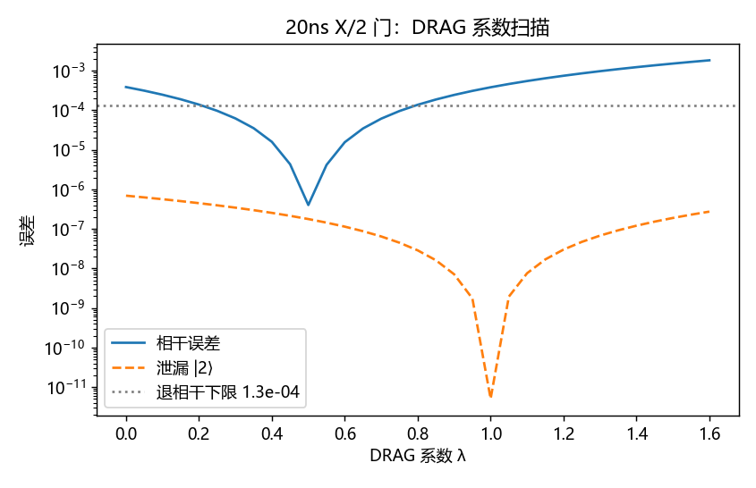
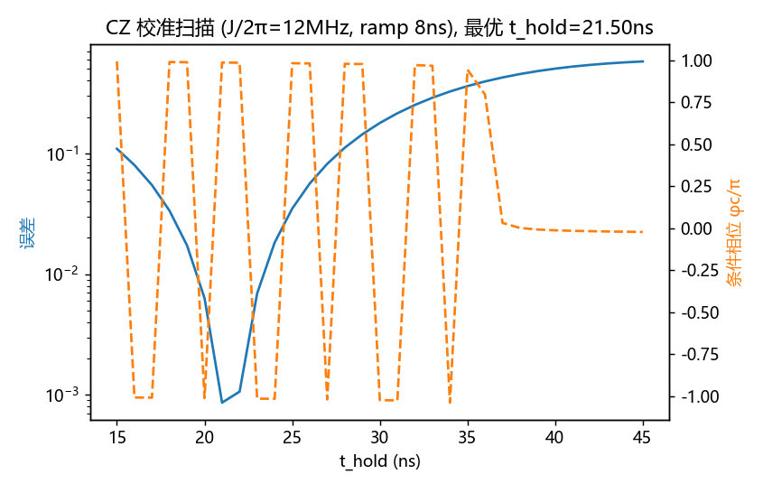
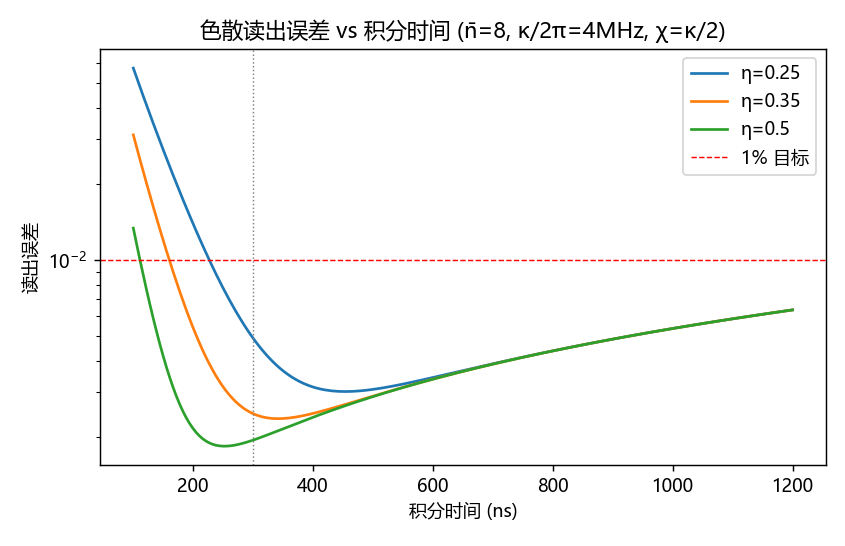
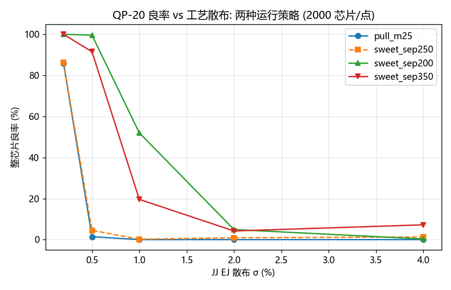

A 20-qubit tunable-transmon quantum computer designed end to end — from the Hamiltonian to a DRC-clean GDS to the machine standing in the undercity hall. Twelve numbered simulations, nine HFSS projects and three Monte-Carlo campaigns back every number on this page; a d=3 surface-code patch runs below its pseudo-threshold.
Twenty asymmetric-SQUID transmons on a 4×5 lattice, 31 tunable couplers, one dilution refrigerator — shown in the city in service mode, vacuum can hoisted away.
QP-20 is the city’s quantum machine: an 11×9 mm chip of 20 flux-tunable transmons (checkerboarded at 4.90 / 5.10 GHz) with a tunable coupler on every lattice edge, multiplexed dispersive readout through four feedlines, and a Bluefors-XLD-class dilution refrigerator to hold it at 20 mK. Room-temperature control is five RFSoC crates doing direct RF synthesis — no analog upconversion chain.
In the city model the fridge is deliberately caught mid-service: the crane has lifted the vacuum can, so all six gold-plated stages (300 K flange down to the mixing chamber), the 83-line coax loom and the mu-metal shield around the chip are exposed. The design rule for every city asset applies here too: the core mechanism is never a black box.


Three calibrated dials — pad size, claw length, coupler flux — and a readout chain that never lets the amplifier’s noise reach the qubit.
A transmon is a Josephson junction shunted by a large capacitor: at EJ/EC ≈ 53 charge dispersion collapses to kHz while −280 MHz of anharmonicity still isolates a clean two-level system. Two-qubit gates are tunable-coupler CZ: idle at the zero-coupling point (residual ZZ measured at 5.6 kHz), pulse the coupler down to open J ≈ 12 MHz, and let the |11⟩↔|02⟩ resonance accumulate a conditional phase of π.
Every geometric knob was calibrated in full-wave HFSS rather than trusted from formulas: pad size → EC (two points: 111 fF and 69.6 fF), claw length → coupling g at 0.83 MHz/µm, feedline web → κ (a 6 µm ground web screens the coupler by three orders of magnitude — shared-slot topology is mandatory), and the Purcell filter is a direct-tap λ/2 line whose tap position sets Qf = (π/2)/sin²(πx/L). Readout is dispersive: the qubit never absorbs a photon, it just pulls the cavity by ±χ; a TWPA at the mixing chamber amplifies at the quantum limit before a 4 K HEMT takes over.




Every headline number, and the run that produced it.
| Claim | Value | Produced by |
|---|---|---|
| Single-qubit X/2 fidelity (20 ns DRAG, leakage 2×10⁻⁷) | 99.987% | sim/03_gate_1q_drag.py |
| CZ fidelity, effective 2-level model (37.5 ns) | 99.92% | sim/04_gate_2q_cz.py |
| CZ fidelity, full 3-body 27-dim model (67 ns) | 99.85% | sim/07_cz_threebody.py |
| CZ with Slepian ramps (decoherence-limited) | 99.883% @ 60.25 ns | sim/09_cz_slepian.py |
| Dispersive readout fidelity (n̄=8, 300 ns) | 99.75% | sim/02_cqed_readout.py |
| χ(n) compression at n̄=8 (dispersive approx. health) | −0.5% | sim/08_readout_nonlinearity.py |
| Idle ZZ crosstalk at coupler off-point | 5.6 kHz | sim/04_gate_2q_cz.py |
| T2 budget closure (flux + thermal-photon + TLS) | 103 µs | sim/06_error_budget.py |
| Fridge stage margins, 50 K → MXC (83 lines, all-SS worst case) | 10.8–75× | sim/05_cryo_budget.py |
| Qubit–cavity g vs claw length (two full-wave points) | 0.83 MHz/µm | hfss_C2/C3_transmon_g.py |
| Feedline κ, shared-slot coupler 300 µm (R-gate verified) | 1.94 MHz | hfss_B_eig_v6.py |
| Purcell tap filter Qf (tap @ 654 µm, formula-validated) | 16.5 | hfss_D_tap.py |
| Whole-chip frequency-plan yield (sep 200 MHz, σEJ 0.5%) | 99.6% | sim/11_freq_collision_mc.py |
| Surface-code d=3 logical error per round (below pseudo-threshold) | 1.18×10⁻³ | sim/10_surface_code.py |
| Error suppression Λ per code-distance step (d=3→5→7) | ≈4.2 | sim/10_surface_code.py |
| GDS v7 polygons / DRC-lite violations | 2367 / 0 | sim/12_chip_gds_v7.py |


The design that survives is the one whose corpses are documented.
v1 used κ/2π = 1.5 MHz and managed only 97.5% fidelity — below spec. The fix was a fast cavity (4 MHz) with a Purcell filter to protect T1, which the filter then had to earn (see below).
Three calibration rounds of the 27-dim CZ model plateaued at 99.0% with stubborn 0.9% leakage. It was the metric: projecting onto bare states counts the qubit–coupler static dressing ((95/1150)² ≈ 0.7%) as loss. In the dressed basis — what a lab actually calibrates — true leakage is 1.3×10⁻⁵.
A/B separation of 250 MHz sits 34 MHz from the |11⟩↔|02⟩ collision at |α| = 284 MHz; at σEJ = 0.5% chip yield collapsed to 4.5%. Moving to 200 MHz separation with sweet-spot operation and junction trimming recovered 99.6%. Bonus finding: “pull every qubit to its exact target” is unworkable — flux-noise Tφ pays for every MHz of pull.
Dispersive-regime mode pulls (~15–30 MHz) drowned in ±7 MHz of per-design adaptive-mesh noise; a three-parameter fit returned nonsense. Sweeping LJ through the crossing and reading the minimum splitting (2g ≈ 350 MHz signal) made it robust in one shot.
Eigenmode terminations absorbed nothing (Q ≈ 5×10⁶) until: ① sheet resistors sharing mere edges with metal never mesh-bond — overlap them 1 µm into the metal; ② one feedline end was accidentally drawn shorted, making the line resonant and un-drivable at 7 GHz; ③ an R-gate (rerun with R=50 Ω vs 5 kΩ; Q must move ~50×) — borrowed from a sister project’s pitfall table — is now mandatory for any lossy boundary.
The elegant side-coupled λ/2 filter measured Qf = 22 877 against a target of 28. No amount of tuning closes three orders of magnitude — the topology was wrong. A direct-tap filter (Qf = (π/2)/sin²(πx/L)) measured 16.5 at the first try and trims to 28.
After a host reboot, every driven solve of the etched-CPW models spun forever at pass 1 (1 core, flat 183 MB, zero result files) while eigenmode solved fine. Dual-instance lock contention, scheduler environment, Fast-sweep type and MPI were each accused and acquitted by single-variable experiments. Root cause still open; the eigenmode method family became the workaround — and delivered everything driven mode owed.
Resonator blocks overrunning feedlines, a missing shared-slot cut, two control lanes merged into one slot (a short), bond pads stacked on top of each other, and the witness structures colliding with two different feedlines. Render → look → fix, seven times, then DRC-lite clean.
Walk into the hall, or spin the machine in your browser.
In the city: serve the repo root and open viewer/index.html?colony=1. Enter the undercity atrium and take the left-wall door (z = −8) into the quantum hall. Seven placards carry the numbers from the ledger above; the wall screen runs a live d=3 surface-code round with breathing error chains, and the two spinners you’ll notice are the chip turntable and the compressor fan.
The machine itself: the design repo ships a self-contained interactive 3D viewer (quantum-computing/out/qp20_machine.html, single file, works offline). Drag to orbit, scroll to zoom, and hit the can-toggle button to lift the vacuum can and expose the six-stage chandelier with its 26-bundle coax loom.
The chip: quantum-computing/out/qp20_chip_v7.gds opens in KLayout — 20 SQUID crosses, 31 couplers, four tap Purcell filters and the witness corner, exactly as rendered above.